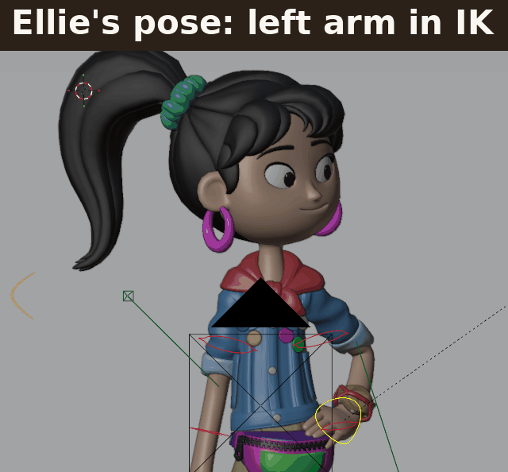
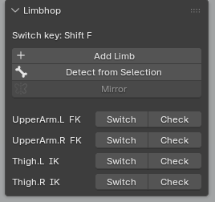
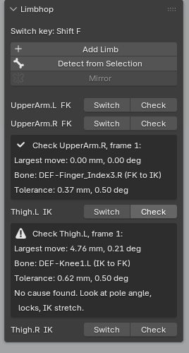

Limbhop for Blender
Switching a limb between IK and FK is a slider, a snap button, a pop-up and a pose you fix by hand. Limbhop does it with one key press, and the arm or leg stays where it was.

Ellie, Blender Studio, CC BY 4.0 (credit), in a real Blender 5.2.4 window: one Shift F flips her left arm between IK and FK, and the arm stays put.
- One key, no pop-up. Select a control of an arm or leg and press Shift F. One press is one undo step.
- The pose stays where it was. Check Limb tells you in millimetres when a limb does not switch cleanly.
- Rigify and CloudRig limbs need no setup. Your own rig's limbs: map each one once.
$12 once, source included (GPL-3.0-or-later). Blender 4.5 LTS and later; tested on 4.5.16 LTS, 5.2.4 LTS and 5.3.0 on Linux.
Polar checkout · download by email · no license key, no account, nothing renews · 14-day refund if it doesn't work as described and we can't fix it · support@ochrestack.com · details
Rigify and CloudRig already have snap buttons. If you are happy with them, you do not need Limbhop: who needs it, and who does not.
- Rigify has FK->IK and IK->FK snap buttons and an IK-FK slider in Rig Main Properties, and its snap buttons run without a pop-up. You can also right-click one snap button and choose Assign Shortcut, which then serves that one limb in that one direction.
- CloudRig's Snap & Bake switches and snaps in one go, behind a dialog; its maintainer has said he may add an opt-in to skip the dialog, and a one-line edit of CloudRig's own file removes it today.
- Auto-Rig Pro snaps its own rigs, and Limbhop has no preset for it.
- Two free extensions, "IK-FK Snapping Tool" and "FK/IK Snapping Tools", snap IK to FK and back on rigs where you type the bones in, one button per direction.
- Rig UI Pro ($70) sets up one-click IK/FK on many rigs, inside a larger rig-UI suite.
- One key for each arm and leg: it finds the limb from the selected control (the FK control, the IK control or the pole), reads the mode, matches the other chain and flips the rig's own switch, with no direction to choose and no slider to drag.
- The same key on Rigify limbs, CloudRig limbs and your own rigs, with nothing to set up on Rigify's arms and legs and on CloudRig's limbs. For your own rig, the Limbhop panel takes each limb once: Add Limb, Detect from Selection, Mirror.
- A switch that keys itself when Auto Keying is on, so the limb does not drift on the frames around the switch.
- A Check Limb button that shows, in millimetres, whether a mapped limb switches cleanly before you use it in a shot.
Fewer actions per switch
| Route | What you do | Actions |
|---|---|---|
| Rigify's own | select the hand, open the Sidebar, scroll to Rig Main Properties, press the snap button, drag the slider, key it | 6 |
| CloudRig's Snap & Bake | press it, read the dialog, press OK | 3 |
| Limbhop | press Shift F | 1 |




Details
- Buying: secure checkout by Polar. The download arrives by email right after payment; the zip includes the full source (GPL-3.0-or-later). No license key, no account, nothing renews. If it doesn't work as described and we can't fix it, email us within 14 days of purchase for a full refund (terms).
- Studio licence: up to 10 seats, $48, the same zip. Email support@ochrestack.com with your team's name and we send the studio checkout.
- Blender 4.5 LTS and later. Tested on Blender 4.5.16 LTS, 5.2.4 LTS and 5.3.0 on Linux, with Rigify 0.6.10 and CloudRig 2.2.32 (CloudRig needs Blender 5.0 or later). Not tested on Windows or macOS.
- A switch property driven by a driver, animated by an NLA strip or an Action constraint, or sitting between the two modes is refused with the thing named, and nothing is written. The status bar names each limb and its new mode ("UpperArm.L: FK"); Shift F is changeable in the add-on's preferences.
- Limbhop makes no network calls and sends nothing anywhere. Support: support@ochrestack.com. Install and first use: Limbhop quick start.
Known limits
- It does not bake a switch over a range of frames; Rigify's Action button and CloudRig's Snap & Bake do. It does not handle spines, necks, fingers, tentacles, spline IK or IK chains of three or more bones.
- A rig whose corrective bones follow the IK/FK mode can move them when you switch, even though the chain matches; Check Limb shows how far.
- Limbs that share one switch property switch together. The full list is in the quick start.
How we tested
All numbers are Limbhop 1.0.1, on a 4-core Intel Xeon at 2.1 GHz, Linux. Movement is the largest move of any deforming bone during a switch. Check Limb's tolerance is 1.0 mm per metre of limb length and 0.5 degrees.
| What | Result |
|---|---|
| Headless tests, Blender 4.5.16 LTS, 5.2.4 LTS, 5.3.0 | 96 tests on each: 90, 95 and 95 passed, none failed; 6, 1 and 1 skipped (five CloudRig tests need Blender 5.0; the undo test needs a window). |
| Real window, real key presses and clicks | 126 steps on 5.2.4, 119 on 4.5.16, 118 on 5.3.0; none failed. |
| Rigify human (MPFB base mesh, Rigify 0.6.10), every arm and leg both ways, Blender 5.2.4 | Limbhop 0.009 mm. Rigify's own IK->FK button plus slider up to 1.03 mm and 0.17 degrees. |
| CloudRig human (CloudRig 2.2.32) | Limbhop 0.0018 mm. CloudRig's own Snap & Bake up to 0.034 mm. |
| Ellie's arms, FK to IK, five frames of her animation | Limbhop 0.30 mm. Her own Snap & Bake, which runs on Blender 4.5, up to 5.76 mm and 12.82 degrees. |
| Ellie, IK to FK | Her corrective bones move up to 18.1 mm with Limbhop and with her own Snap & Bake alike: over the tolerance, and Check Limb reports it. |
Credits
Ellie, from Blender Studio's Ellie pose library demo: (c) Blender Foundation | studio.blender.org, used under CC BY 4.0. The pictures are screenshots of a Blender window with her file open; we hid most of her rig's controls, zoomed the view, cropped and labelled them. Ellie is not included with Limbhop. Human in the Rigify measurements: MPFB base mesh (CC0).
$12 once, source included · Polar checkout · 14-day refund if it doesn't work as described and we can't fix it · tested on Blender 4.5.16 LTS, 5.2.4 LTS and 5.3.0 on Linux